速览
这也许更像营业战略的话题，但放在这里讲。企划游戏或向上司提案时，常被要求「明确目标客群」：想主要卖给什么层，主要按年龄、性别或喜好划分。同样，软件被哪些层支持，营销会精密地数据化，任天堂作品也能得到惊人详细的数据。也就是说有支持度高的目标层，瞄准它或弥补弱的层来卖商品，就是目标定位（targeting）；调查其倾向的是营销/市场调研（marketing）——本来含义更广，这里是粗略的说法。他当然不反对做这些，但个人认为太认真考虑也没用；当然也有非常有效的行业，但特别是新构思游戏企划时，建议别太当真。目标定位和营销是从已有事物推测的数据，并不会指出今后的路。用户的界线很模糊：有喜欢可爱东西的老人，也有喜欢硬派表现的孩子，绝对无法在某处划线。例如初代《星之卡比》是面向新手的游戏，但他从没说过是面向儿童；新手当然包括大人、孩子、男女；硬要说的话，目标是「新手」，不是年龄。而且虽说面向新手，也有相应的手感，高手也可能为了享受操作感而玩，一言难以概括。另外，营销是对已完成事物的数据，细致分析别人走过的路，没有开辟新路的样子；能知道更安全的路——大路、人多的地方——但一直追下去会渐渐变得平凡、平均，反而卖不出去。例如 FC、SFC 时代，日本出了一大堆像《勇者斗恶龙》《最终幻想》的作品：作为营销，RPG 卖得好，非常正确；但结果跳进红海就没意义了。目标定位没有说的那么准确，营销是过去的东西，两者在想做新事时都可能成为阻碍，听一半就好。想做新事的人总是孤独的，因为在开辟没人走过的路；但那正是开拓地平线的东西：不做与别人不同的事就不会扩展，先驱者会成为后人的指标。作为商业所需的东西，有时并不适用——这反而很重要，希望包括思考战略的上司在内都能记住。
1. 目标定位与营销 0:03
这也许更像营业战略的话题。企划游戏或向上司提案时，常被要求「明确目标客群」。
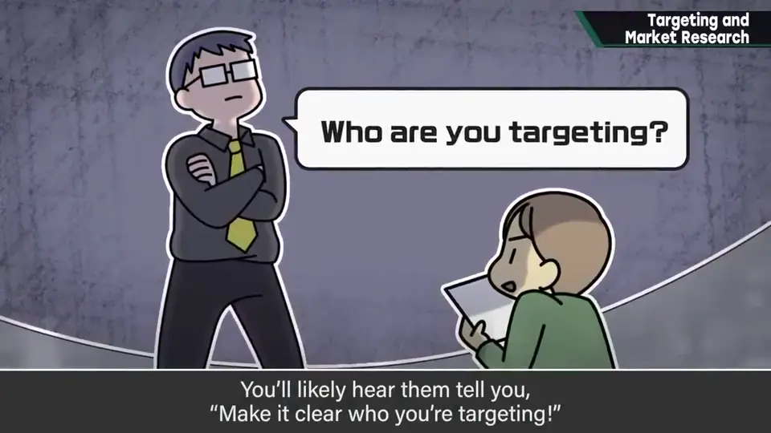
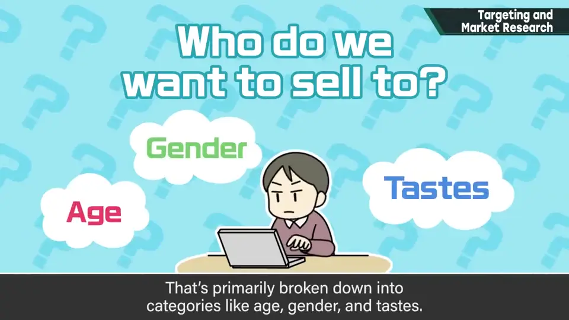
也就是明确想主要卖给什么层：主要按年龄、性别或喜好划分。
同样，软件被哪些层支持，营销会精密地数据化；任天堂的作品也能拿到惊人详细的数据。
有支持度高的目标层，瞄准它、或弥补弱的层来卖商品，这就是目标定位；调查其倾向的就是营销（市场调研）。本来含义更广，这里是粗略的说法。
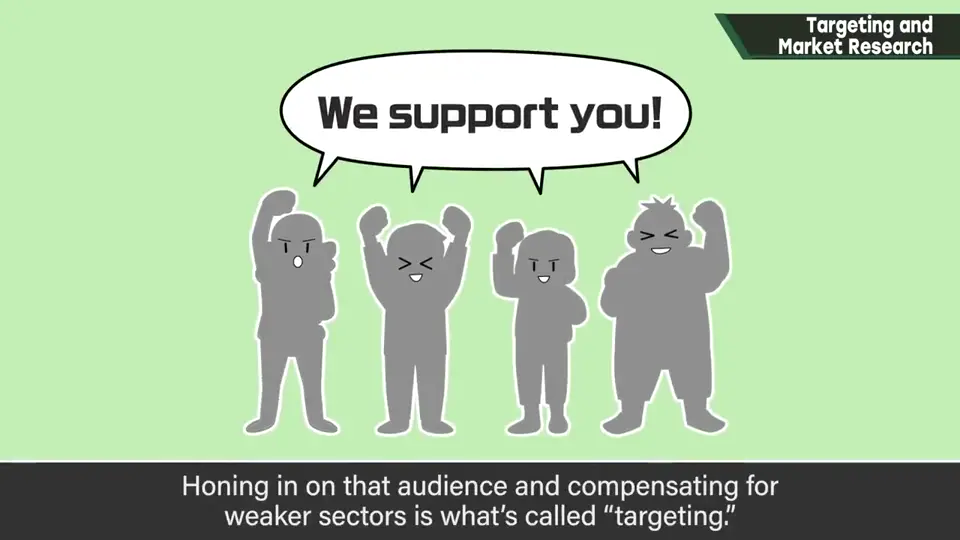
2. 别太当真 1:06
他当然不反对做目标定位和营销，也有非常有效的行业。
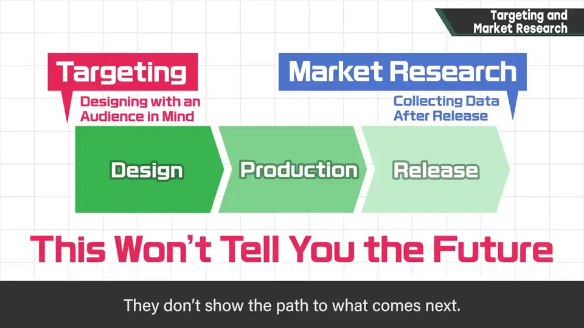
目标定位和营销，是从已有事物推测的数据，并不会指出今后的道路。
3. 用户的界线很模糊 1:35
用户的界线非常模糊：有喜欢可爱东西的老人，也有喜欢硬派表现的孩子，绝对无法在某处划线。
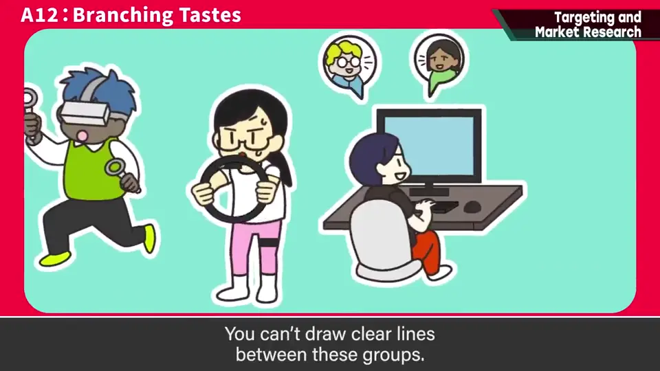
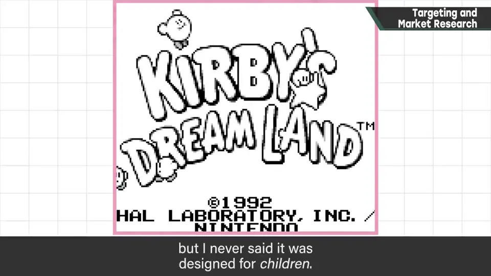
例如初代《星之卡比》是面向新手的游戏，但他从没说过它面向儿童。新手当然包括大人、孩子、男人、女人；硬要说，目标是「新手」，不是年龄。
而且虽说面向新手，它也有相应的手感，高手也可能为了享受操作感而玩——一言难以概括。
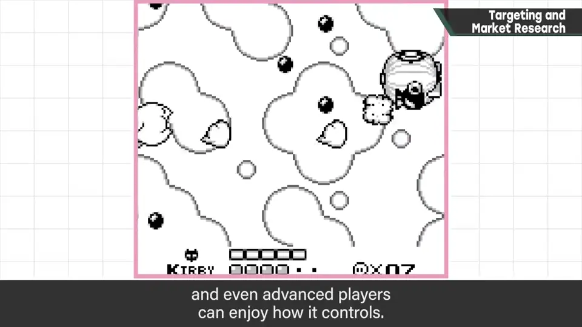
4. 营销是别人走过的路 2:32
营销是对已完成事物的数据，细致分析别人走过的路，其中没有开辟新路的意味。
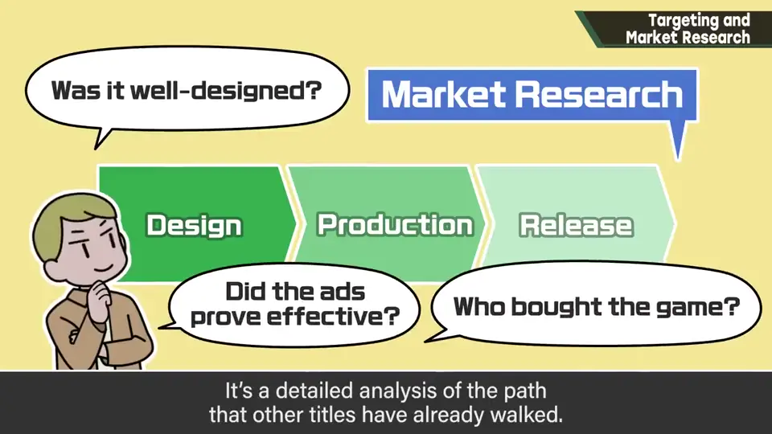
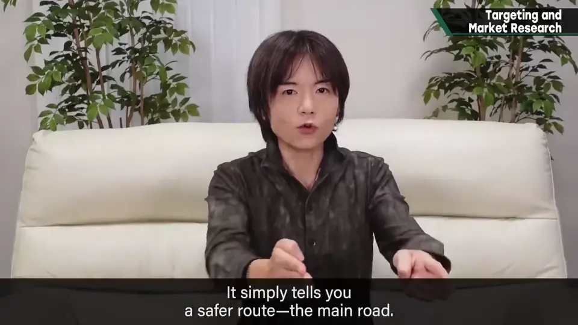
能知道更安全的路——大路、走的人多的地方。但一直追下去，会渐渐变得平凡、平均，反而卖不出去。
例如 FC、SFC 时代，日本出了一大堆像《勇者斗恶龙》《最终幻想》的作品。作为营销，「RPG 卖得好」非常正确；但结果跳进了红海，就没有意义。
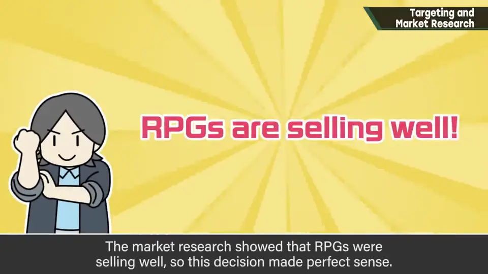
5. 开新路的人是孤独的 3:31
想做新事的人总是孤独的，因为在开辟没人走过的路。但那正是开拓地平线的东西。
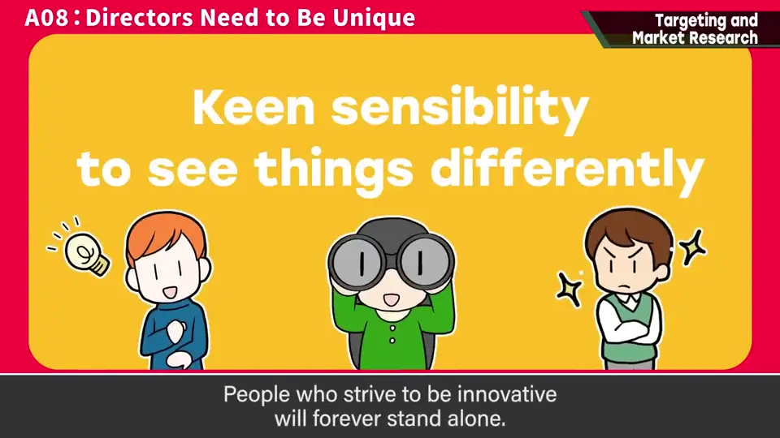
不做与别人不同的事就不会扩展，先驱者会成为后来者的指标。作为商业所需的东西，有时并不适用——这反而很重要，希望包括思考战略的上司在内都能记住。
自测题
1. 目标定位和营销分别指什么？
目标定位：瞄准支持度高的层或弥补弱层来卖商品；营销：调查这些倾向的数据化工作。 0:40
2. 初代《星之卡比》的目标客群是谁？
「新手」——包括大人、孩子、男女，而不是按年龄的「儿童」。 2:02
3. 为什么一直追随市场调研会出问题？
它是别人走过的路，追下去会变得平凡、跳进红海（如 FC/SFC 时代一窝蜂做 RPG）。 2:32